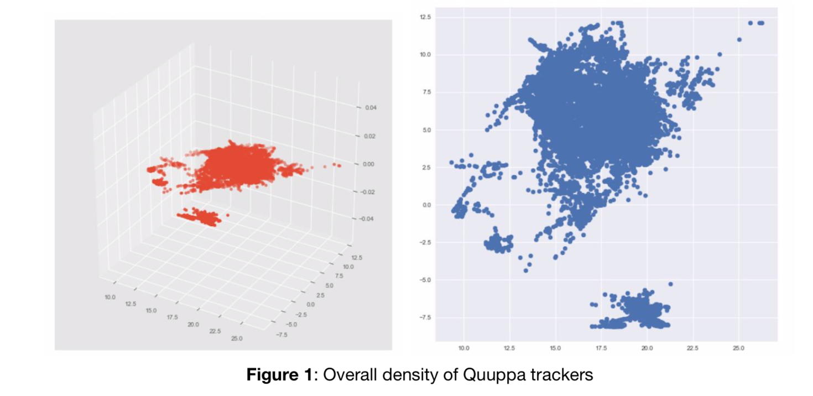
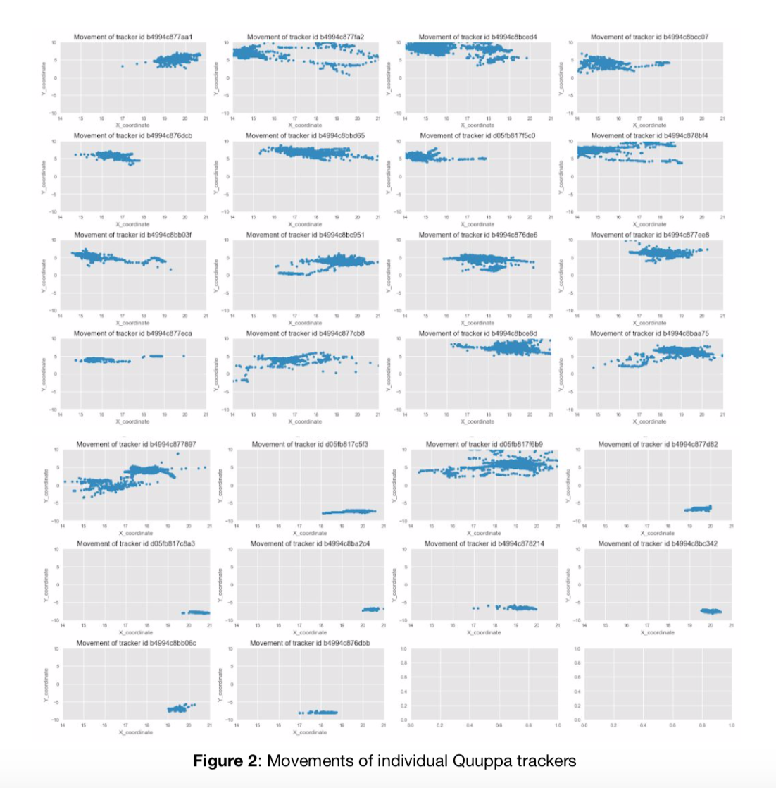
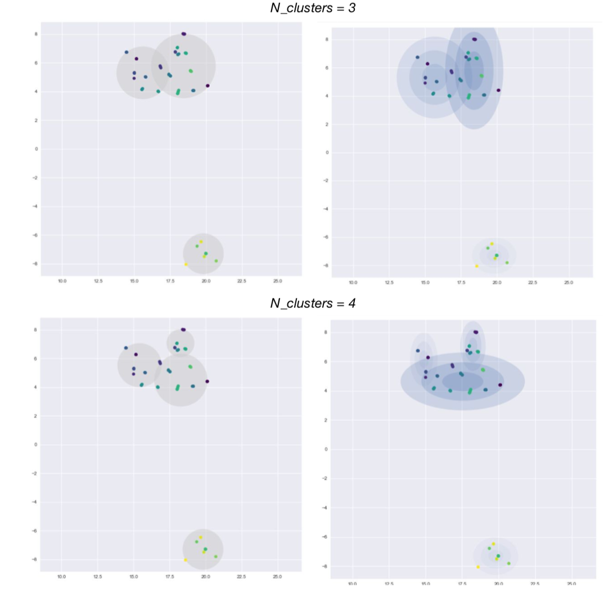
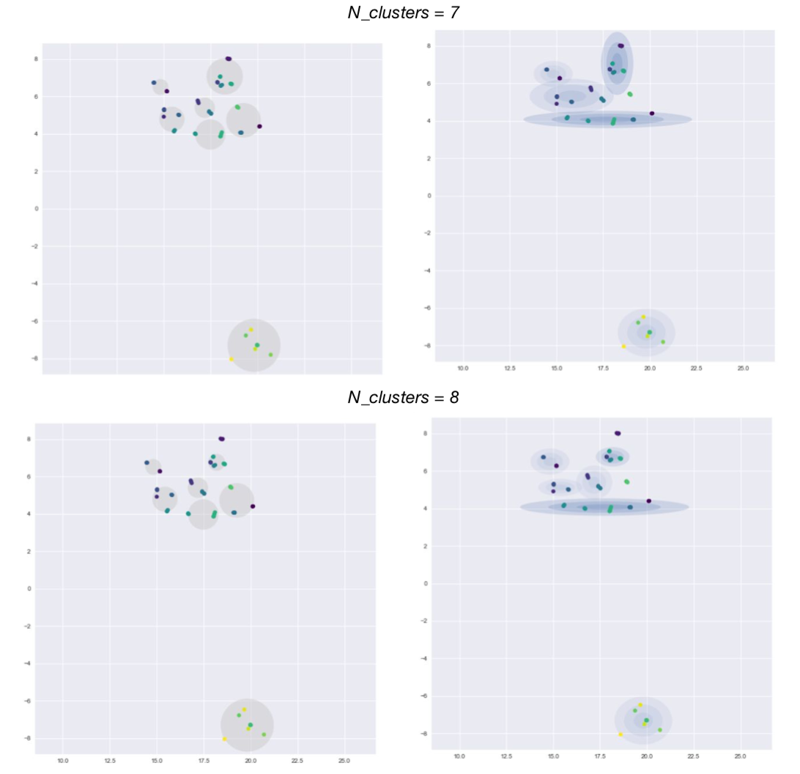
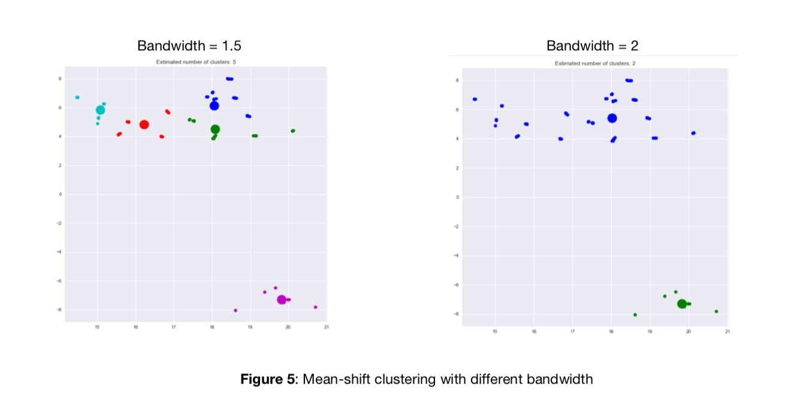

In this short research project, I applied three clustering algorithms, namely k-means clustering, Gaussian Mixture Model (GMM) with expectation maximization, and mean-shift algorithm to analyze the Quuppa tracking location data in order to understand group membership and dynamics in an educational setting. On a higher level, I hope to understand how location-based data is used to further smart education and learning. Clustering is valuable in understanding how participants interact, form groups and change group memberships over time. The dataset I used is provided by EdLab, Teachers College, containing movements of 26 distinct sensors 19 seconds. I also provided briefly the advantages and disadvantages of each clustering algorithm.
Analyzing location-based data has long been employed to understand smart education. Smart education is defined as the prominent paradigm in global education with the aim of improving learner’s quality of lifelong learning. The focus of smart education is contextual, personalized and seamless learning, all of which are supported by the Quuppa tracking system data analysis. According to NMC, IoT, wearable technology and location-based data analysis enhances the advancement of “contextual and seamless learning” by synchronizing people and objects. “Wearable technology can integrate the location information, exercise log, social media interaction and visual reality tools into the learning.” To support that purpose, according to Bartels, smart computing is the latest cycle in tech disruption, which fuels the rise of smart learning. It blends all aspects such as software, hardware, network, smart devices, sensors, big data and intelligent system to materialize innovative applications in education.
The dataset contains 96776 location data points from 26 distinct trackers in 19 seconds. After converting the log files into a json dictionary, I took the X coordinate, Y coordinate and the recorded time, as well as the trackers’ id and their names, to create a data frame for analysis. I dropped the data points where ‘zones’ is null (there are nine such instances) because I suspect these were technological errors. The overall density in 2D & 3D space is visualized below:

The individual trackers scatter plots are visualized below.

For this project, I used three main methods to analyze group dynamics: k-mean clustering, GMM with expectation maximization and mean-shift algorithm.
K-means and GMM Comparison with increasing number of predefined clusters:
 
Mean-shift Clustering Algorithm

After taking all factors into considerations, mean-shift and GMM are best candidate models for analyze tracking data by Quuppa. There is a trade-off: while GMM can work with mixed memberships and has a probability component, it needs the number of cluster as human input, which is more prone to errors. Mean-shift algorithm can detect clusters without a priori knowledge, given a bandwidth specified by industry knowledge. However, mean-shift has a tendency of taking noises into its clustering. In both case, the chosen clustering algorithm will give sufficiently good insights into the group membership of each participants in a discrete snapshot in time. Educators can use this information to foster collaborations in their events, or to design the layout of the venue to achieve desired group outcomes. Another application is to design activities to break up pre-formed groups and facilitate cross-group collaborations to benefits everyone involved. Facilitators can be assigned, for example, to improve group dynamics and lend support to participants that need to join a group.
The method described in this research assumes that the different snapshots are independent of each other (i.e. each snapshot is discrete), and therefore group membership in one snapshot doesn’t affect the others. This is not true in practical situations where group membership may change depend on preceding group events. Therefore, a natural next step is to apply Dynamic Mixture Models (DMM) to analyze the change in group dynamics through time. DMM can be applied to time series and can explain similarities between movements of participant pairs, which cannot be explained by a single snapshot clustering.